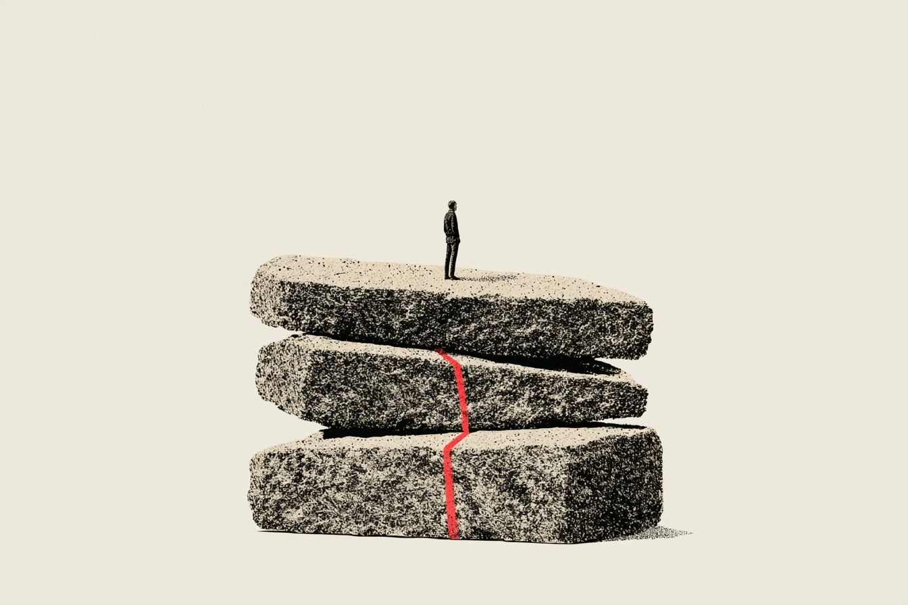
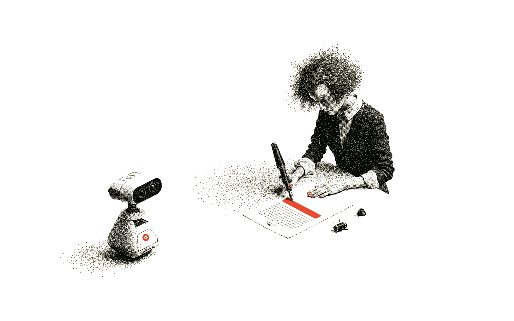
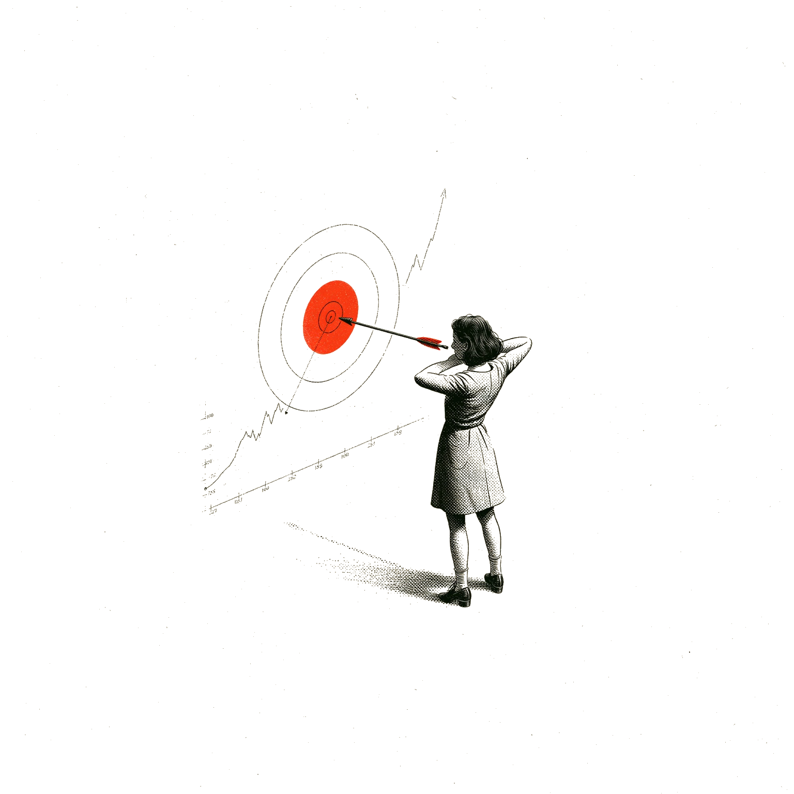
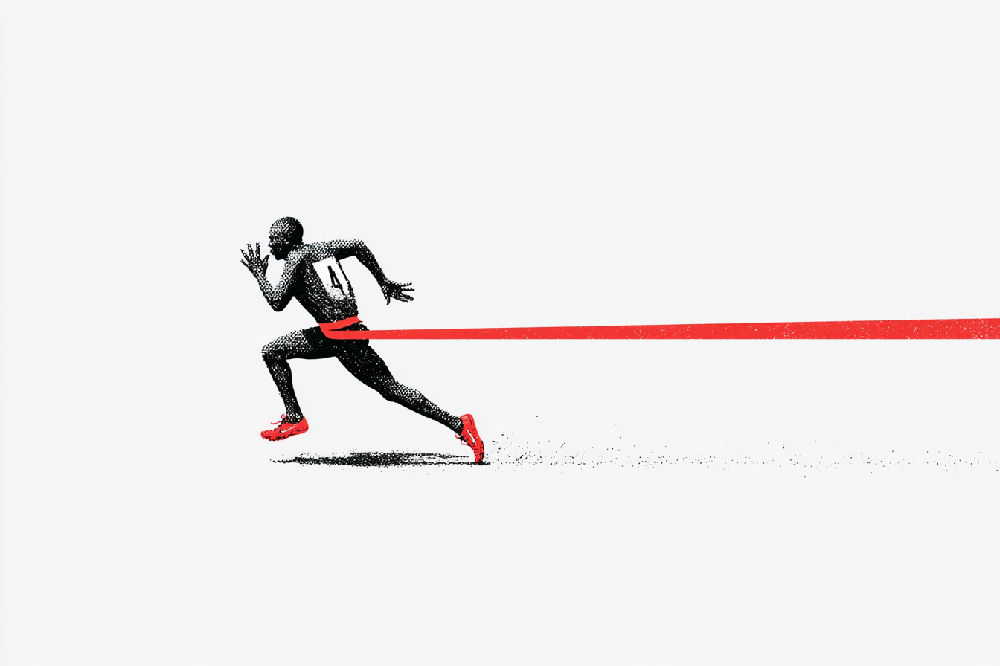

Button
core / actionA working surface for the system
A browsable workbench for components, channel profiles, tokens, illustrations, and fixed-size outputs. This is the proposed shape, shown in HTML before the tooling is built.
core / actioncore / statuseditorial / hierarchyeditorial / emphasiseditorial / responsiveResize the workbench to inspect the intended mobile collapse.

core / keyboard--rf-redcanonical accent · #E3120B--rf-bluecanonical action blue--surface-raisedwarm paper surface--text-bodynear-black reading ink


Concept only. The navigation, filters, density toggle, component states, token panel, and asset index are the proposed workbench behavior. The underlying authoring and regression tooling has not been built yet.